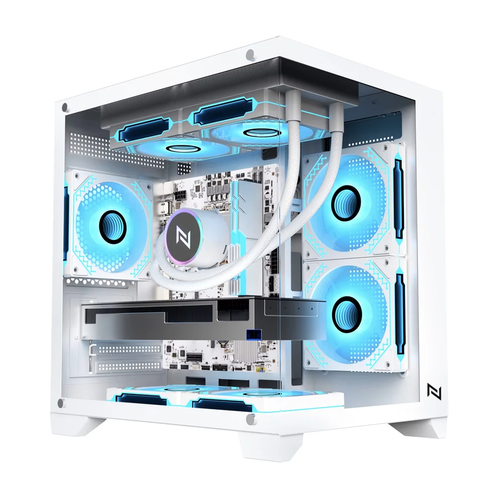
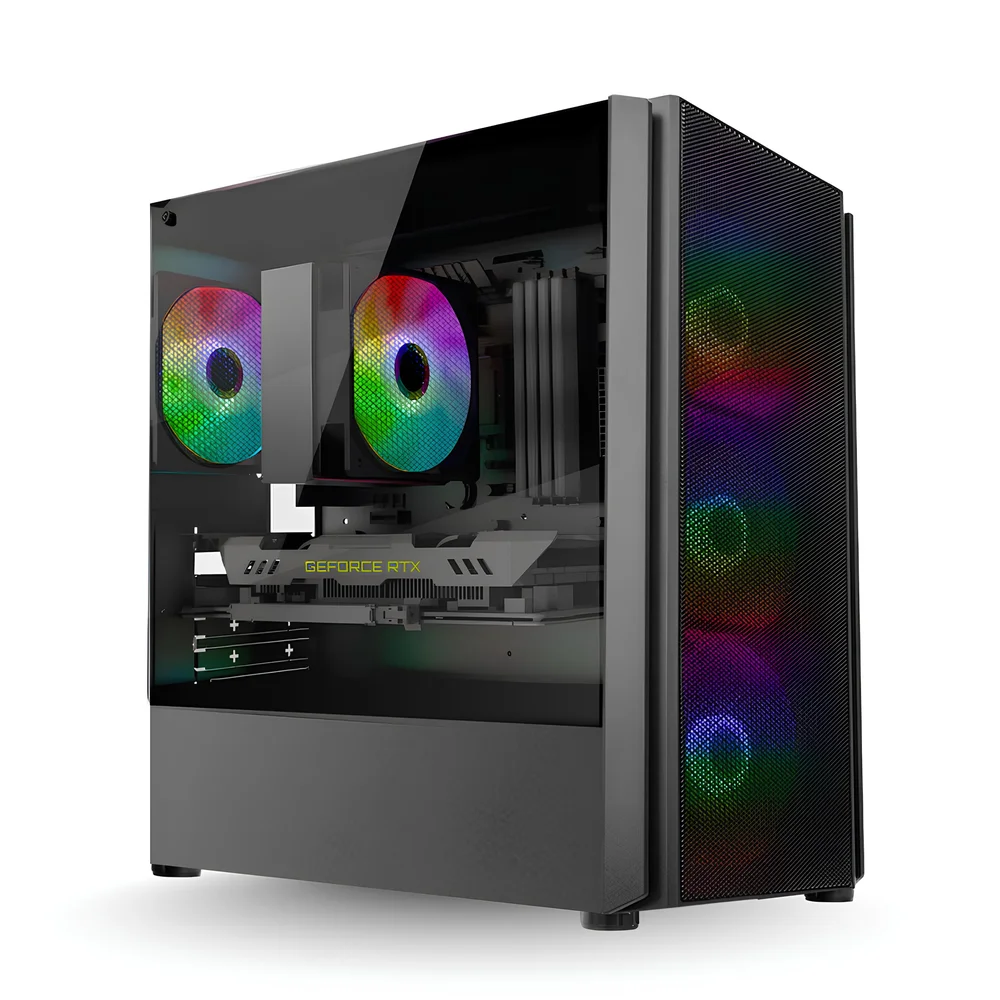
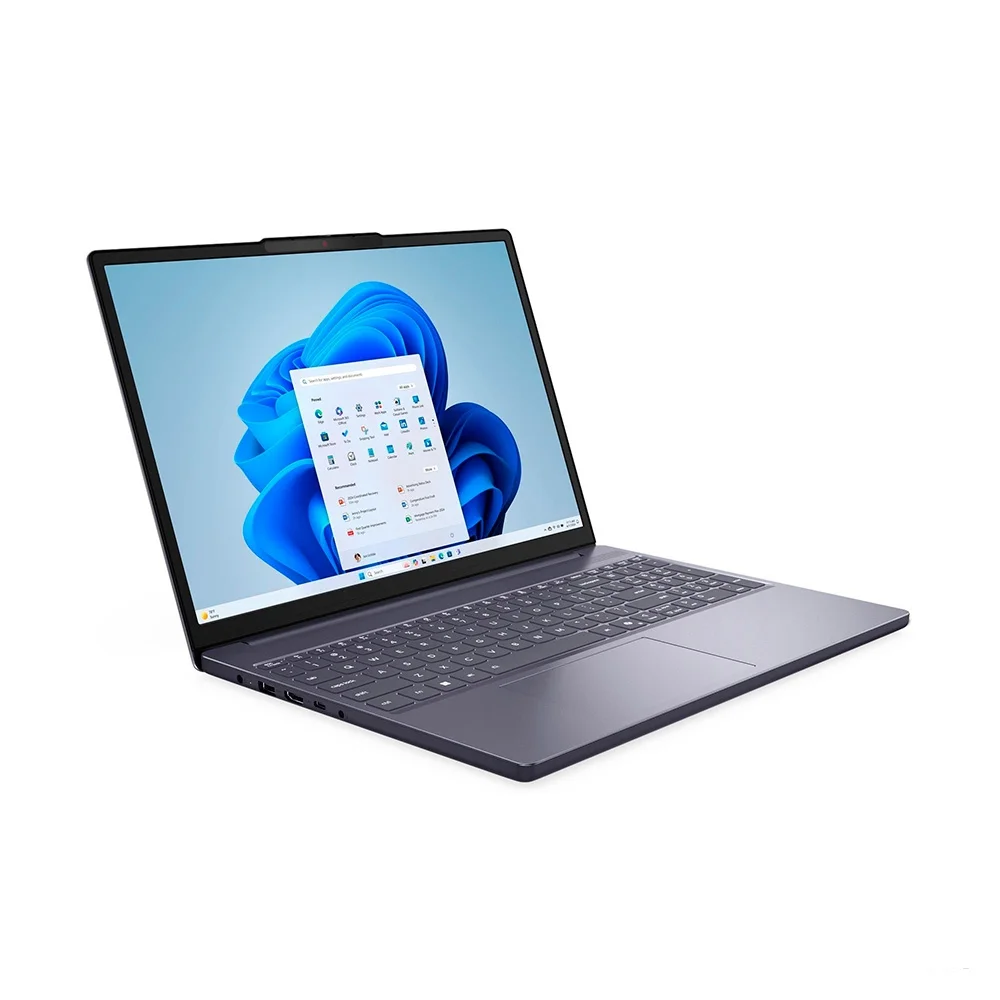

Veja os nossos departamentos!
Algumas máquinas para Games
Para você que busca melhor desempenho nos Games, clique no botão abaixo:

O que é necessário para jogar games em um PC?
A diferença é a instalação do SSD e GPU (placas de vídeo), o GPU trabalha na parte do carregamento das imagens que CPU não aguenta porque ele é melhor para games.
SSD carrega as informações que existe nele, isso melhora muito mais a qualidade do que você usar um HD.
Algumas máquinas para edição de vídeos/fotos
Para você que procura fazer boas montagens de fotos e Edições de vídeos, clique no botão abaixo:

O que é necessário para editar fotos e vídeos?
Máquinas para edição de Imagens e Vídeos precisam muito de RAM e VRAM já que elas carregam muitos arquivos e precisam ter potencial de editar as imagens e vídeos.
SSD carrega as informações que existe nele, isso melhora muito mais a qualidade do que você usar um HD.
Algumas máquinas para LiveStreaming/Suporte Chat
Para você que procura monitores melhor qualidade em suas lives/ monitores secundários para
melhor interação com o chat, clique no botão abaixo:

O que é necessário para um computador de uso diário?
Máquinas de uso diário podem ter custo menor, pois são feitas para tarefas simples, como navegar, estudar e trabalhar, sem exigir alto desempenho como PCs de jogos ou streaming.
SSD carrega as informações que existe nele, isso melhora muito mais a qualidade do que você usar um HD.